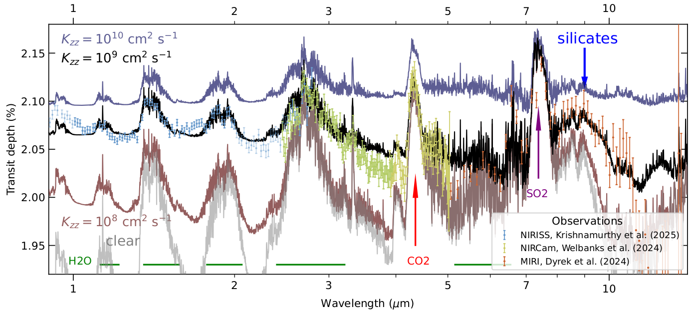
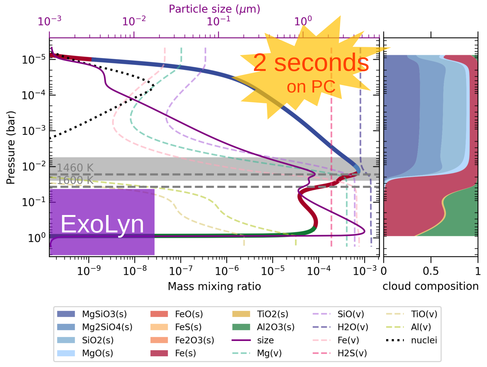
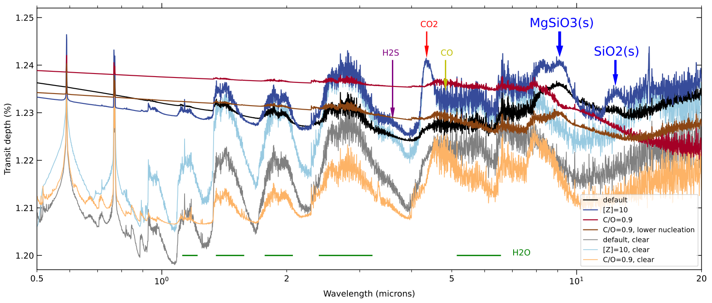
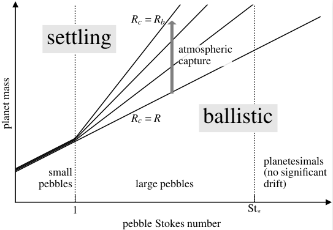
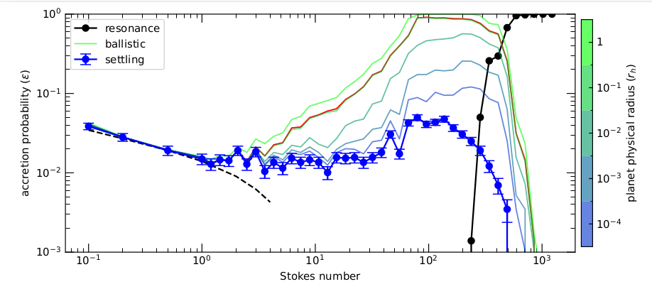
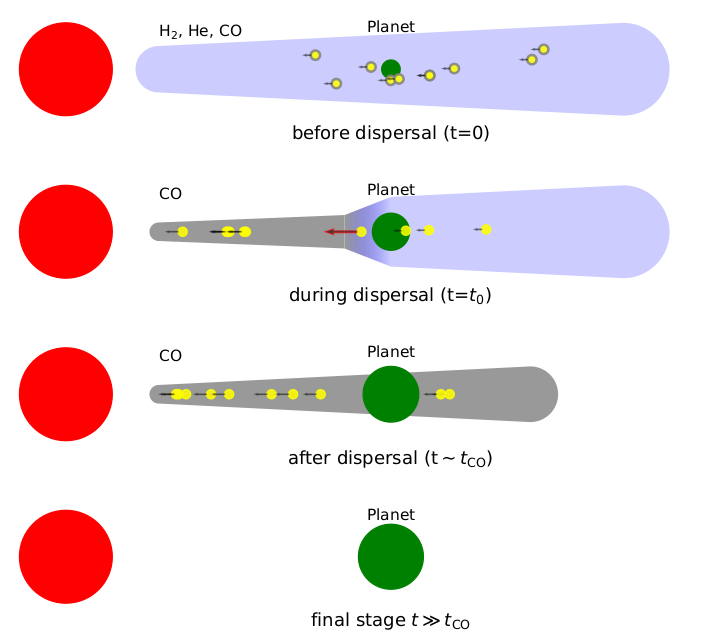
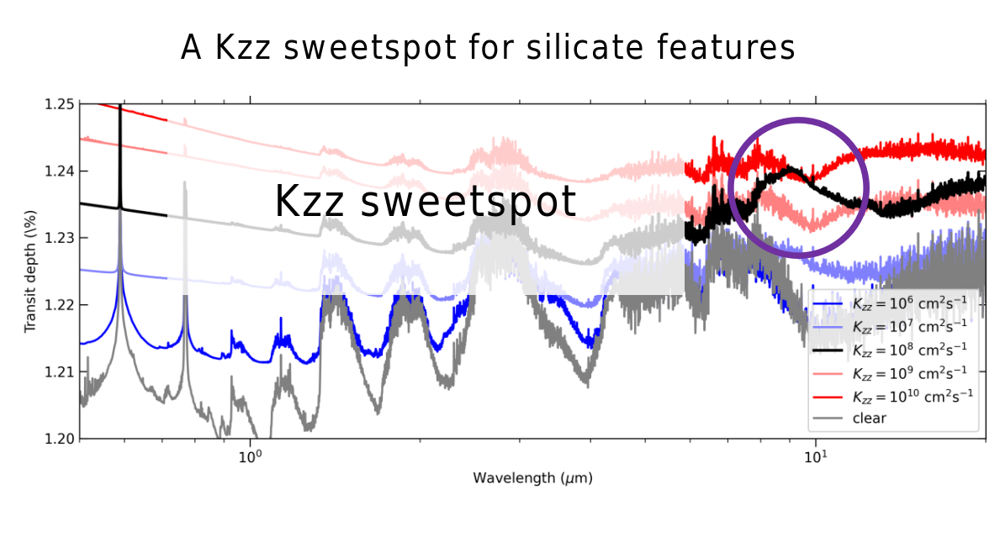
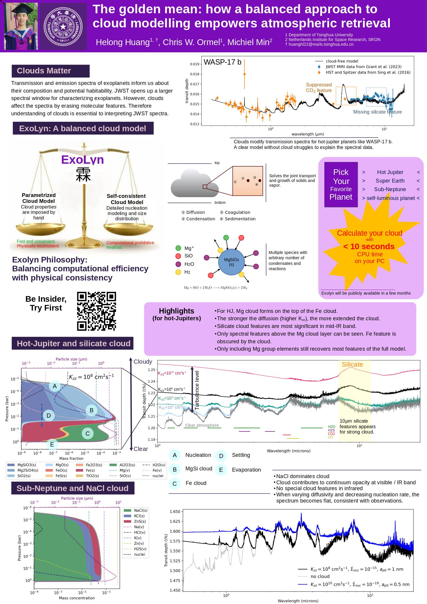

Welcome to my home page! I'm a Fourth year astronomy student in Tsinghua University , Beijing, China, under the advice of Chris Ormel. My research interest covers planet formation and planet atmosphere .
[In prep] Diffusivity affects the composition of exoplanet clouds
Turbulence in atmospheres is instrumental to cloud formation, because it dredges up vapor that fuels clouds high up in the atmosphere. Clouds in more turbulent atmosphere are likely to be more extended, however, it is unclear how turbulence affects the composition of clouds. The goal is to study how the cloud particles dredged up by turbulence feed back on the temperature-pressure (TP) profile and consequently alters the cloud composition. Vertical turbulent diffusivity Kzz is varied to study its effect on the cloud properties.A Cloudy Fit to the Atmosphere of WASP-107 b
The James Webb Space Telescope (JWST) opens up a new window to study the composition of exoplanet atmospheres. Benifiting from its broad wavelength coverage and extraodinary signal-to-noise ratio, astronomers are measuring the elemental abundance of exoplanets with unprecedented precision, which allowed them to unveil the habitability and formation path of exoplanets.
ExoLyn: A golden mean approach to multispecies cloud modeling in atmospheric retrieval, A&A, 691, A291
Clouds are ubiquitous in planets' atmospheres. On Earth, cloud particles consist of water ice. But for hot-Jupiters the temperature are so high that silicates and iron start to evaporate in the deep atmosphere, while they condense out at higher altitudes. Hence, we expect clouds to be made from these condensates. Clouds affect the light transmitted through the atmosphere, smearing out the molecular lines and displaying their own, unique absorption features. The increasingly precise atmospheric spectra data from facilities like JWST calls for a cloud model that contains many physical and chemical principles. But this comes often at the expense of making the runtime of such model very long. Often, millions of excutions must be run in order to retrieve the atmospheric properties. What is needed is a balanced approached that is both computationally efficient as well as physically realistic.

Accretion of aerodynamically large pebbles, MNRAS, 522, 2241
Pebbles -- the aerodynamically active particles in protoplanetary disks -- are essential in driving planet growth. This is mainly because they drift efficiently in the disk, such that the planet growth is not limited by the local solid budget. When a pebble drifts across the planet orbit, gas drag dissipates its energy, resulting in their capture by the planet. The Stokes number (St) describes a pebble's aerodynamical size. Larger pebbles or a lower gas density both increase the Stokes number. This work focuses on the accretion of those pebbles more loosely coupled to gas: St > 1 but where drift is still significant. In contrast to the St < 1 pebbles, the regime of large pebble accretion has not been investigated thoroughly before.
We performed numerical simulations to integrate the large pebble's orbit in a 2D, global reference frame. The planet moves in fixed Keplerian orbits and the pebble undergoes both gas drag and gravity from the star and the planet. We varied the pebble's Stokes number in different simulations. It is found that for St > 1 pebbles, they are more likely to directly hit the finite surface of the planet, rather than settling down the planet's gravitational well, due to the combination of gravity and drag. We found that pebbles of Stokes number 70 < St < 400 are most favorable to be accreted, with the accretion efficiency approaching 100%. That is, almost every pebble in this size range that drifts past the planet will be swallowed by the planet. For higher Stokes numbers, the drift of pebble is so slow that it will be captured outside of the planet's orbit in a mean motion resonance. However, we found that the collision velocity among these pebbles are so high that they are likely to fragment to smaller sizes, which are highly likely to be accreted.
The St > 1 pebbles may be produced when planetesimals collide with each other, or when the gas density becomes low. The latter scenario could be achieved in the debris disk phase. We proposed a debris disk model where the primordial H/He gas is blown away by fast photoevaporation and the diluted CO gas is replenished by the outgassing from solids. We followed the drift and accretion of ~10μm-sized dusts particles, which could be produced during collision of larger particles. In such low density debris disk, the 30μm dust will become St > 1 pebbles and be accreted at high efficiency. We find up to ~0.3 Earth mass of these pebbles will be accreted by an Earth-mass planet, mostly in the debris disk phase as St > 1 pebbles. In conclusion, planets could still accrete solid material in the late phase of disk evolution, mainly by small-sized but aerodynamically big pebbles. This late accretion could contribute several percentage of the planet mass and shape the chemical composition of these planets atmospheres.




